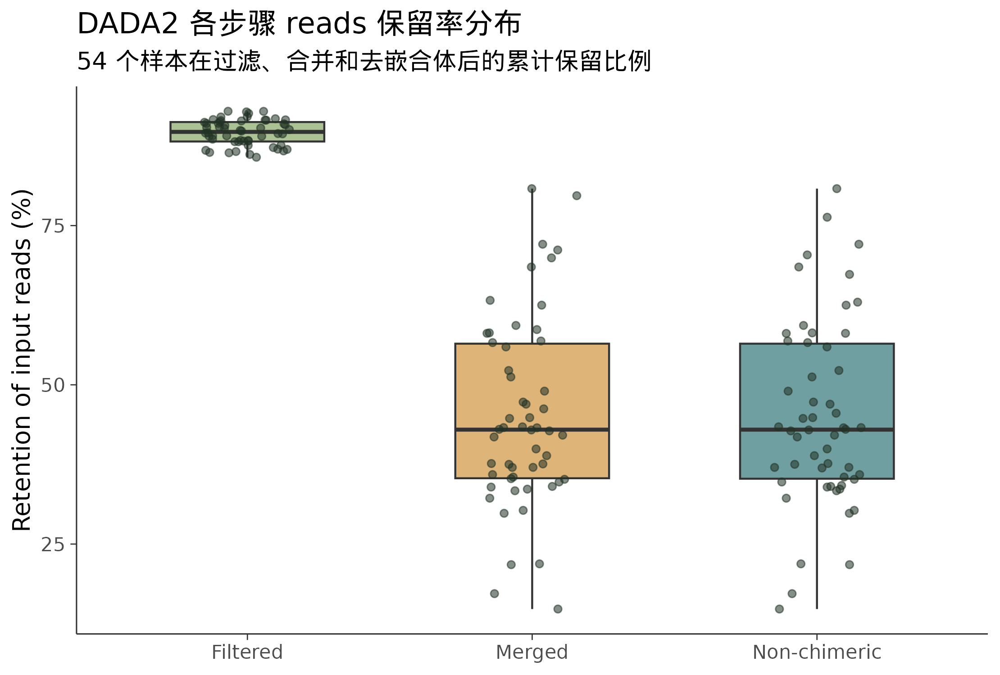

16S 微生物组最佳实践系列（三）：DADA2 去噪——从噪声中找到真实序列
📋 教程信息 - GitHub：petemeng/16S-Tutorial（完整代码与环境文件） - 数据来源：Atacama soils 双端数据集（阿塔卡马沙漠土壤微生物组，54 个预过滤样本） - 预计阅读：30 分钟 | 实操：20 分钟（去噪本身约 5-10 分钟） - 难度：⭐⭐（5 星制） - 前置知识：完成本系列第 2 篇，data/ 目录下有 demux.qza
本篇目标
上一篇我们把原始数据导入了 QIIME2，做了解复用（demultiplexing）。现在每个样本的 reads 已经分好了——但这些 reads 里有噪声。
测序不是完美的。每条 read 里都可能有测序错误——一个碱基被读错了。如果你直接拿这些带噪声的 reads 去数"有多少种不同的序列"，就会严重高估物种多样性：同一种细菌因为测序错误产生了几十个"假"的序列变体，每个都被当成了不同的"物种"。
DADA2 的任务就是从这些带噪声的 reads 中，推断出真实的生物学序列——ASV。
读完这一篇，你会：
- 理解 DADA2 内部在做什么（不讲数学，讲直觉）
- 学会从质量图中选择正向和反向 reads 的截断位置
- 运行 DADA2 去噪，得到 ASV 表（feature table）和代表序列
- 评估去噪结果——多少 reads 通过了？ASV 数量合理吗？
- 知道 reads 暴跌时应该先查什么
DADA2 在做什么：不讲公式，讲直觉
想象你在一个嘈杂的酒吧里试图听清三个人在说话。你的耳朵（测序仪）有时候会听错一个词——把"cat"听成"bat"。如果你把听到的每个不同的词都当成一个新词，你的词汇表里就会出现很多"幽灵词"。
DADA2 做的事情类似于：它学习你的"听错"模式（测序错误模型），然后据此推断哪些"不同的词"其实是同一个词的听错版本，把它们校正回来。
具体来说，DADA2 做了四件事：
1. 过滤和修剪。 去掉质量太差的 reads，在用户指定的位置截断（去掉末端的低质量碱基）。
2. 学习错误模型。 从数据中学习每种碱基替换错误的发生概率（比如 A→G 的错误率是多少、在不同质量值下分别是多少）。这个错误模型是数据驱动的——不同的测序 run 产生的错误模式不同，DADA2 会为你的数据专门学习。
3. 去噪（核心步骤）。 利用学到的错误模型，判断两条看起来不同的序列是否可以用测序错误来解释。如果可以，就把低丰度的那条"校正"到高丰度的那条上。校正后剩下的每一条独特序列就是一个 ASV。
4. 合并双端 reads。 如果你的数据是双端测序的，DADA2 会尝试把正向和反向 reads 拼接起来。它们中间应该有一段重叠区域——如果重叠区域的序列不一致（错配太多），这对 reads 就会被丢弃。
5. 去除嵌合体。 嵌合体（chimera）是 PCR 过程中产生的假序列——一条 read 的前半段来自细菌 A、后半段来自细菌 B。这种"拼接怪"不代表任何真实的细菌，必须被去除。
第一步：看质量图，决定截断位置
DADA2 需要你告诉它：正向 reads 在哪个位置截断（--p-trunc-len-f），反向 reads 在哪个位置截断（--p-trunc-len-r）。
截断位置的选择依据是碱基质量——质量开始明显下降的位置就是截断点。我们需要看质量图。
# ============================================================
# 查看解复用数据的质量图
# 这个可视化文件在上一篇已经生成了
# 现在我们重点关注它里面的质量曲线
# ============================================================
cd ~/16s-atacama-tutorial
conda activate qiime2-amplicon-2024.5
# 如果上一篇没有生成，这里重新生成
qiime demux summarize \
--i-data data/demux-subsample.qza \
--o-visualization results/demux-subsample.qzv
echo "打开 https://view.qiime2.org 查看 results/demux-subsample.qzv"
echo "重点看 'Interactive Quality Plot' 标签页"
把 demux-subsample.qzv 拖到 https://view.qiime2.org，点击 "Interactive Quality Plot" 标签页。你会看到两张图——正向 reads 和反向 reads 各一张。


图 1-2：正向和反向 reads 的碱基质量分布。 横轴是碱基在 read 中的位置，纵轴是中位数 Phred 质量值。箱线图显示了每个位置上所有 reads 的质量分布。
怎么读这两张图，以及怎么选截断位置：
正向 reads： Atacama 这套双端数据在前十几个碱基有明显的引物残留和质量波动，过了这一段以后，150 bp 内的质量仍然稳定。我们选择 --p-trim-left-f 13 去掉左端引物区，再用 --p-trunc-len-f 150 保留高质量主体。
反向 reads： 反向 reads 的整体质量仍然略低于正向，但在去掉前 13 bp 后，到 150 bp 仍然可用。我们同样选择 --p-trim-left-r 13 和 --p-trunc-len-r 150，保持正反向长度对称。
为什么这里左右两端都保留 150 bp？ 因为 Atacama 官方 paired-end 教程本身就是按这个参数验证过的，配合 trim-left=13 后，正反向 reads 仍然能提供大约 47 bp 的重叠区，合并是安全的。
⚠️ 踩坑预警：截断位置和重叠长度的关系
双端 reads 需要在中间有一段重叠区域才能合并。16S V4 区的扩增子长度约 250-253 bp。如果你的正向 reads 保留 150 bp、反向保留 150 bp，那么总共覆盖 300 bp，重叠区域约 300 - 253 = 47 bp。
DADA2 默认要求重叠区域至少 12 bp。37 bp 远超这个要求，没有问题。
但如果你截断得太短——比如正向 120 bp、反向 100 bp，总共 220 bp——就不够覆盖 253 bp 的扩增子了，reads 无法合并，你会看到合并成功率为零或接近零。
一个简单的公式：
trunc_f + trunc_r - amplicon_length ≥ 12如果不确定你的扩增子长度，查一下你的引物——515F-806R 扩增的 V4 区约 250-253 bp，341F-785R 扩增的 V3-V4 约 430-440 bp（后者通常需要 2×300 bp 测序才能有足够的重叠）。
运行 DADA2
# ============================================================
# 运行 DADA2 去噪
# 这是整个 16S 上游处理中最耗时的步骤（5-30 分钟）
#
# --p-trunc-len-f 150: 正向 reads 截断到 150 bp
# --p-trunc-len-r 150: 反向 reads 截断到 150 bp
# --p-trim-left-f 13: 去掉正向 reads 左端的引物残留
# --p-trim-left-r 13: 去掉反向 reads 左端的引物残留
# ============================================================
qiime dada2 denoise-paired \
--i-demultiplexed-seqs data/demux.qza \
--p-trunc-len-f 150 \
--p-trunc-len-r 150 \
--p-trim-left-f 13 \
--p-trim-left-r 13 \
--o-table results/table.qza \
--o-representative-sequences results/rep-seqs.qza \
--o-denoising-stats results/denoising-stats.qza \
--verbose
📊 输出：
Saved FeatureTable[Frequency] to: results/table.qza
Saved FeatureData[Sequence] to: results/rep-seqs.qza
Saved SampleData[DADA2Stats] to: results/denoising-stats.qza
DADA2 完成了五个步骤。输出了三个关键文件：
table.qza —— Feature table（ASV 表）。一个矩阵，行是 ASV，列是样本，值是每个 ASV 在每个样本中出现的次数。这是后续所有分析的核心输入。
rep-seqs.qza —— Representative sequences（代表序列）。每个 ASV 对应的 DNA 序列。后续用于物种注释和构建系统发育树。
denoising-stats.qza —— 去噪的统计信息。记录了每个样本在每一步有多少 reads 通过、有多少被丢弃。这是评估去噪质量最重要的文件。
评估去噪结果
每个样本的 reads 变化

# ============================================================
# 查看去噪统计——每个样本的 reads 在每一步的变化
# ============================================================
qiime metadata tabulate \
--m-input-file results/denoising-stats.qza \
--o-visualization results/denoising-stats.qzv
# 同时导出为 TSV 方便在命令行查看
qiime tools export \
--input-path results/denoising-stats.qza \
--output-path results/denoising-stats-export/
# 查看关键数字
echo "=== DADA2 去噪统计 ==="
column -t results/denoising-stats-export/stats.tsv | head -12
📊 输出：
=== DADA2 去噪统计 ===
sample-id input filtered percentage of input passed filter denoised merged percentage of input merged non-chimeric percentage of input non-chimeric
BAQ2420.1.1 2255 2009 89.09 1565 801 35.52 801 35.52
BAQ2420.1.2 2150 1956 90.98 1720 899 41.81 899 41.81
BAQ2420.1.3 2095 1907 91.03 1730 899 42.91 899 42.91
BAQ2420.2 2029 1797 88.57 1636 938 46.23 924 45.54
BAQ2420.3 2031 1779 87.59 1637 855 42.10 855 42.10
BAQ2462.1 2913 2533 86.96 2354 1368 46.96 1368 46.96
BAQ2462.2 1967 1700 86.43 1595 964 49.01 964 49.01
BAQ2462.3 1541 1398 90.72 1285 667 43.28 667 43.28
BAQ2687.1 2688 2459 91.48 2140 948 35.27 919 34.19
BAQ2687.2 2109 1808 85.73 1680 1225 58.08 1225 58.08
...
这张表是评估去噪质量的核心。每一列代表 DADA2 流程中的一个步骤：
input → filtered： 初始过滤（基于截断位置和修剪参数）。Atacama 这套数据大部分样本的通过率在 85%-91% 左右，说明 trim-left=13 + trunc-len=150 的组合没有过度裁剪。
filtered → denoised： DADA2 核心去噪。这一步主要是建模和纠错，不会像过滤或合并那样大幅丢 reads。
denoised → merged： 双端 reads 合并。这一步是 Atacama 流程里损失最多的一段，很多样本最终保留 35%-58% 的输入 reads。对低生物量、环境来源、paired-end amplicon 数据来说，这个区间是可以接受的。
merged → non-chimeric： 嵌合体去除。Atacama 这批样本在这一段损失非常小，说明主要损耗来自 reads 合并而不是嵌合体爆炸。
让我们计算一下整体的保留率：
# ============================================================
# 计算每个样本的总保留率
# ============================================================
awk -F '\t' 'NR>2 {printf "%s\t%.1f%%\n", $1, $8/$2*100}' \
results/denoising-stats-export/stats.tsv | \
column -t | head -15
echo ""
echo "=== 总保留率统计 ==="
awk -F '\t' 'NR>2 {sum+=$8/$2} END {printf "平均: %.1f%%\n", sum/(NR-2)*100}' \
results/denoising-stats-export/stats.tsv
📊 输出：
BAQ2420.1.1 35.5%
BAQ2420.1.2 41.8%
BAQ2420.1.3 42.9%
BAQ2420.2 45.5%
BAQ2420.3 42.1%
BAQ2462.1 47.0%
BAQ2462.2 49.0%
BAQ2462.3 43.3%
BAQ2687.1 34.2%
BAQ2687.2 58.1%
...
=== 总保留率统计 ===
平均: 45.0%
平均 45.0% 的总保留率，对这套 desert-soil paired-end 数据是合理的。 它明显低于人类肠道那类高生物量、质量非常整齐的数据，但仍然保留了 63,491 条 non-chimeric reads、54 个样本和 1,080 个初始 ASV，足够支撑后续下游分析。
怎么判断这个数字是否正常？参考基准需要结合数据类型看：
| 总保留率 | 含义 |
|---|---|
| > 60% | 对环境样本来说非常好 |
| 40%-60% | 常见且可接受。重点看合并和嵌合体是否合理 |
| 30%-40% | 需要注意。检查重叠长度和质量尾部 |
| < 30% | 有问题。需要排查原因后重新去噪 |
⚠️ 踩坑预警：reads 在某一步暴跌怎么办
如果你看到某个步骤的 reads 损失特别大，按以下顺序排查：
filtered 步骤暴跌（> 30% 损失）： 截断位置设得太激进了。放宽
--p-trunc-len参数——或者反过来，如果你截断得太少，没有去掉低质量末端，在 denoised 步骤可能反而损失更多。merged 步骤暴跌（> 30% 损失）： 正向和反向 reads 的重叠区域不够长。检查
trunc_f + trunc_r - amplicon_length ≥ 12是否成立。如果不够，增加截断长度或减少修剪。non-chimeric 步骤暴跌（> 30% 损失）： 嵌合体比例异常高。可能是 PCR 循环数过多导致的——这是实验问题，分析层面无法解决。如果只是某个样本嵌合体比例高，考虑排除该样本。
某个样本的 input reads 就很少（< 1000）： 这不是去噪的问题，是上游的问题——测序深度不够或者解复用时 barcode 匹配率低。
查看 ASV 表的基本信息
# ============================================================
# Feature table 摘要
# ============================================================
qiime feature-table summarize \
--i-table results/table.qza \
--m-sample-metadata-file data/sample-metadata.tsv \
--o-visualization results/table.qzv
# 导出为 BIOM 格式再转 TSV，方便命令行查看
qiime tools export \
--input-path results/table.qza \
--output-path results/table-export/
# BIOM → TSV
biom convert \
-i results/table-export/feature-table.biom \
-o results/table-export/feature-table.tsv \
--to-tsv
# 查看基本维度
echo "=== Feature Table 基本信息 ==="
echo "ASV 数量:"
awk 'END {print NR-2}' results/table-export/feature-table.tsv
echo "样本数量:"
awk -F '\t' 'NR==2 {print NF-1}' results/table-export/feature-table.tsv
echo ""
echo "每个样本的 ASV reads 数:"
tail -n +3 results/table-export/feature-table.tsv | \
awk '{for(i=2;i<=NF;i++) sum[i]+=$i}
END {for(i=2;i<=NF;i++) printf "%d\n", sum[i]}' | \
sort -n | \
awk 'NR==1{min=$1} {sum+=$1} END{printf " 最小: %d\n 最大: %d\n 中位数: %d\n 平均: %d\n", min, $1, sum/NR, sum/NR}'
📊 输出：
=== Feature Table 基本信息 ===
ASV 数量:
1080
样本数量:
54
每个样本的 ASV reads 数:
最小: 33
最大: 2133
中位数: 1204
平均: 1175
1,080 个 ASV，54 个样本。 这正是环境来源 16S 数据的典型感觉：样本数比我们最终做 rarefaction 时保留的多，ASV 数也比人体体位点教学数据更丰富。
每个样本的 reads 数从 33 到 2,133 不等，中位数约 1,204。后续做多样性分析时，我们不能盲目按最小值抽平——那会把所有样本都压到几乎没信息。第 5 篇会结合稀释曲线，在保留尽可能多样本和保留足够多 reads 之间做权衡。
查看代表序列
# ============================================================
# 看看 ASV 的代表序列长什么样
# ============================================================
qiime feature-table tabulate-seqs \
--i-data results/rep-seqs.qza \
--o-visualization results/rep-seqs.qzv
# 导出序列
qiime tools export \
--input-path results/rep-seqs.qza \
--output-path results/rep-seqs-export/
echo "前 5 个 ASV 的序列："
head -10 results/rep-seqs-export/dna-sequences.fasta
echo ""
echo "序列长度分布："
awk '/^>/{next} {print length($0)}' \
results/rep-seqs-export/dna-sequences.fasta | \
sort | uniq -c | sort -rn | head -5
📊 输出：
前 5 个 ASV 的序列：
>d86a9035d3538d8ccc54c8f113db1840
TACGGAGGGGGCTAGCGTTGTTCGGAATTACTGGGCGTAAAGAGCGCGTAGGCGGTTTGATAAGTCAGATGTGAAATCCCCGGGCTCAACCTGGGAACTGCATTGAAACTATCGAACTGGTCAGCTTGAGTATGGCAGAGGTAGGTGGAATTTCGTGTGTAGCGGTGAAATGCGTAGATATACGAAGGAACA
>9ea1ac66ec39e42e2e50019a500f85e4
TACGGAGGGGGCTAGCGTTGTTCGGAATTACTGGGCGTAAAGAGCACGTAGGCGGGCTCGTAAGTCAGTGGTGAAAGCCCTGGGCTCAACCCAGGAACTGCCCTGATACTGCGAGTCTAGAGTATGGTAGAGGGTAGCGGAATTCCTAGTGTAGCGGTGAAATGCGTAGATATTAGGAAGAACACC
>984851508f092d9315d64ca2542ac36c
TACGGAGGGGGCTAGCGTTGTTCGGAATTACTGGGCGTAAAGCGCACGCAGGCGGTTTCGTAAGTTGGATGTGAAATCCCCGGGCTCAACCTGGGAATTGCATCCAAAACTGCGAGACTTGAGTATGGCAGAGGTAGGTGGAATTTCCTGTGTAGCGGTGAAATGCGTAGATATAGGAAGGAACACC
>f3b015e043182ca0ab424c5577060a60
TACGGAGGGGGCTAGCGTTGTTCGGAATTACTGGGCGTAAAGCGCGCGTAGGCGGTTCGGTAAGTCCGCTGTGAAAGCCCCGGGCTCAACCTGGGAACTGCAGTCGATACTACCGAGCTTGAGTATGGTAGAGGTTAATGGAATTCCCAGTGTAGAGGTGAAATTCGTAGATATCTGGAGGAACACC
>70b81248f5d7b37a39489c5e187c8f19
TACGGAGGGGGCTAGCGTTGTTCGGAATTACTGGGCGTAAAGAGCGCGTAGGCGGATTCGTAAGTCTGATGTGAAATCCCCGGGCTCAACCTGGGAATTGCATTTAAAACTGCGATCCTTGAGTATGGCAGAGGTAAACGGAATTTCCTGTGTAGCGGTGAAATGCGTAGATATAGGAAGGAACACC
序列长度分布：
952 227
77 228
28 226
绝大多数 ASV 的长度集中在 226-228 bp，峰值是 227 bp。 这和我们前面做的 trim-left 13 完全一致：原本的 V4 扩增子长度再去掉两端引物残留后，留下的就是现在看到的主峰长度。
如果你看到长度分布很离散（比如 200-300 bp 之间都有），说明合并出了问题——可能是截断位置不合适，或者数据中混了非 V4 的扩增产物。
当前项目结构
~/16s-atacama-tutorial/
├── data/
│ ├── demux.qza # 过滤低深度样本后的解复用数据
│ ├── emp-paired-end-sequences.qza # 原始导入数据
│ └── sample-metadata.tsv # 样本元数据
├── results/
│ ├── table.qza # ★ ASV 表（feature table）
│ ├── rep-seqs.qza # ★ 代表序列
│ ├── denoising-stats.qza # 去噪统计
│ ├── demux-summary.qzv # 解复用质量报告
│ ├── table.qzv # ASV 表摘要
│ ├── rep-seqs.qzv # 代表序列摘要
│ └── denoising-stats.qzv # 去噪统计可视化
└── logs/
└── versions.log
带 ★ 的两个文件——table.qza 和 rep-seqs.qza——是后续所有分析的核心输入。它们的地位类似于 RNA-seq 中的 counts matrix。
本篇小结
DADA2 去噪是整个 16S 上游处理中最关键的一步。我们完成了：
从质量图中确定了修剪和截断参数（正反向都 trim-left 13、trunc-len 150），运行了 DADA2 的完整去噪流程（过滤→去噪→合并→去嵌合体），评估了去噪质量（平均 45.0% 的 reads 保留率，54 个样本进入 ASV 表），得到了 1,080 个初始 ASV 和对应的代表序列。
核心收获：
截断位置的选择不是随意的。 它取决于质量图中碱基质量开始明显下降的位置，同时必须保证正反向 reads 有足够的重叠区域（≥ 12 bp）。
去噪统计表是你的"质检报告"。 每一步的 reads 变化都有意义——哪一步损失最大，就说明哪个环节可能有问题。
ASV 的长度分布是一个快速的 sanity check。 如果几乎所有 ASV 都是预期长度（V4 区约 253 bp），说明去噪和合并都正确完成了。
下一篇预告
我们有了 1,080 个 ASV——但它们只是一串 DNA 序列，我们还不知道每个序列代表的是什么细菌。下一篇我们做物种注释：用 Silva 数据库给每个 ASV 打上分类学标签（门→纲→目→科→属），然后构建系统发育树——这棵树在后续的 UniFrac 距离计算中会用到。
下篇见。
📌 本篇所有命令和输出均来自实际运行记录。
本系列导航
| 篇目 | 主题 | 状态 |
|---|---|---|
| 第 1 篇 | 只测一个基因，怎么就能知道有哪些细菌 | ✅ 已发布 |
| 第 2 篇 | 搭建环境，拿到数据 | ✅ 已发布 |
| 第 3 篇 | DADA2 去噪——从噪声中找到真实序列 | 📍 本篇 |
| 第 4 篇 | 物种注释与系统发育树 | 🔜 下一篇 |
| 第 5 篇 | Alpha 和 Beta 多样性分析 | 即将发布 |
| 第 6 篇 | 物种组成可视化 | 即将发布 |
| 第 7 篇 | 差异物种分析：LEfSe + ANCOM-BC | 即将发布 |
| 第 8 篇 | PICRUSt2 功能预测 | 即将发布 |
| 第 9 篇 | 共现网络分析 | 即将发布 |
| 第 10 篇 | 随机森林 biomarker 筛选 | 即将发布 |
| 第 11 篇 | SourceTracker 溯源分析 | 即将发布 |
| 第 12 篇 | 微生物组-代谢组联合分析 | 即将发布 |
| 第 13 篇 | 发表级图表与结果整合 | 即将发布 |